泥嚎~这里是饭团的Lolita衣帽间ദ്ദി(｡•̀ᴗ-)ॱ
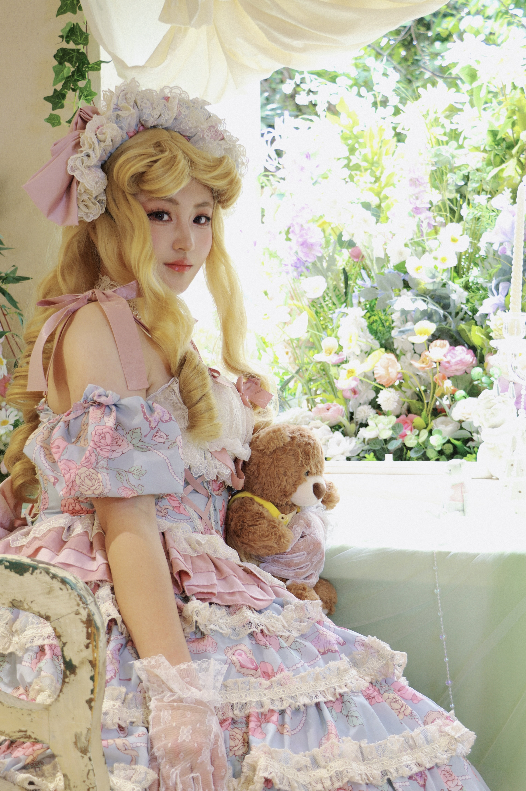
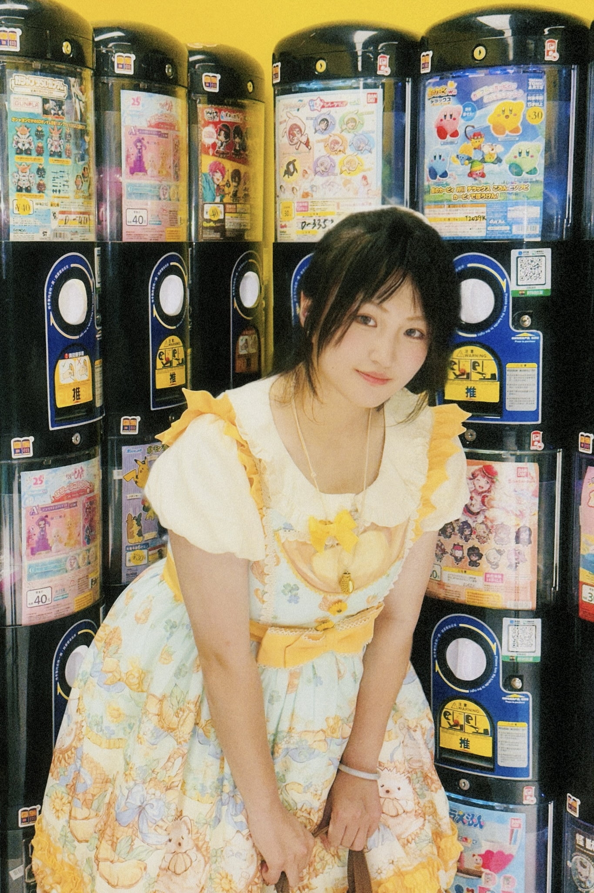
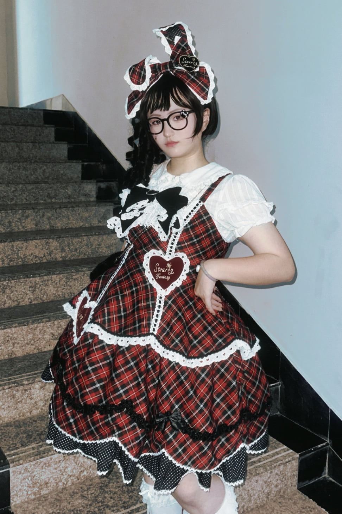
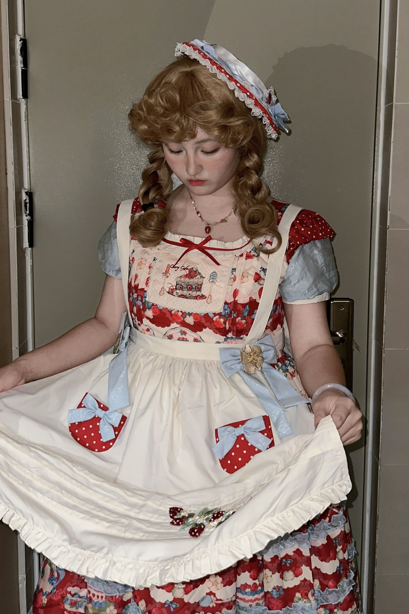
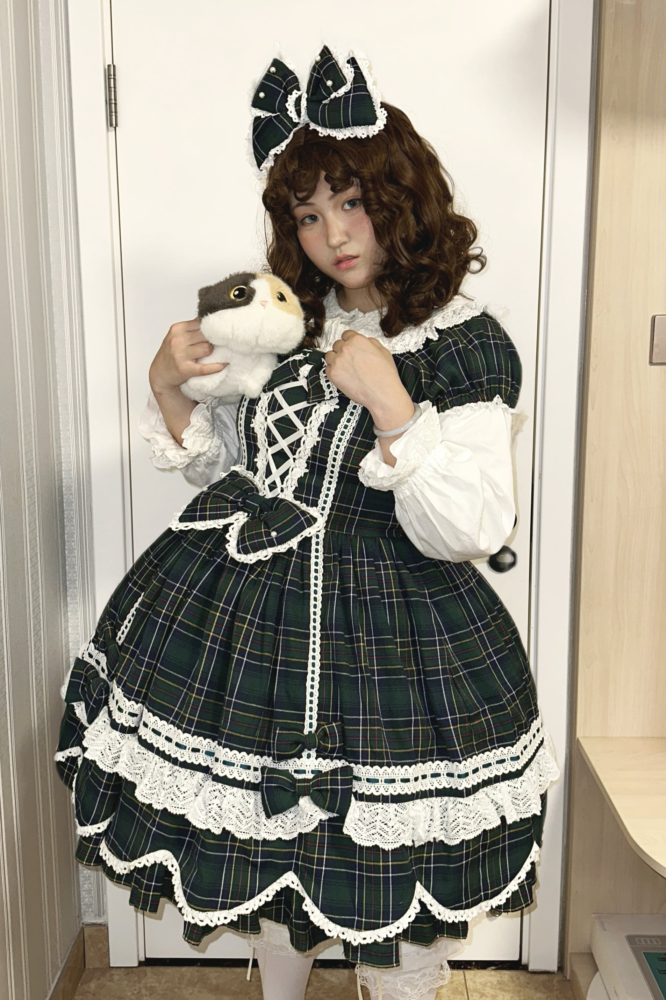
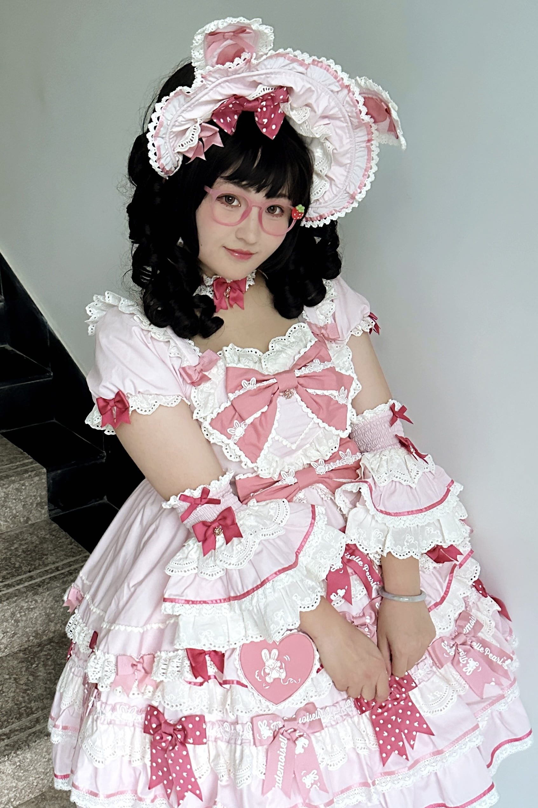
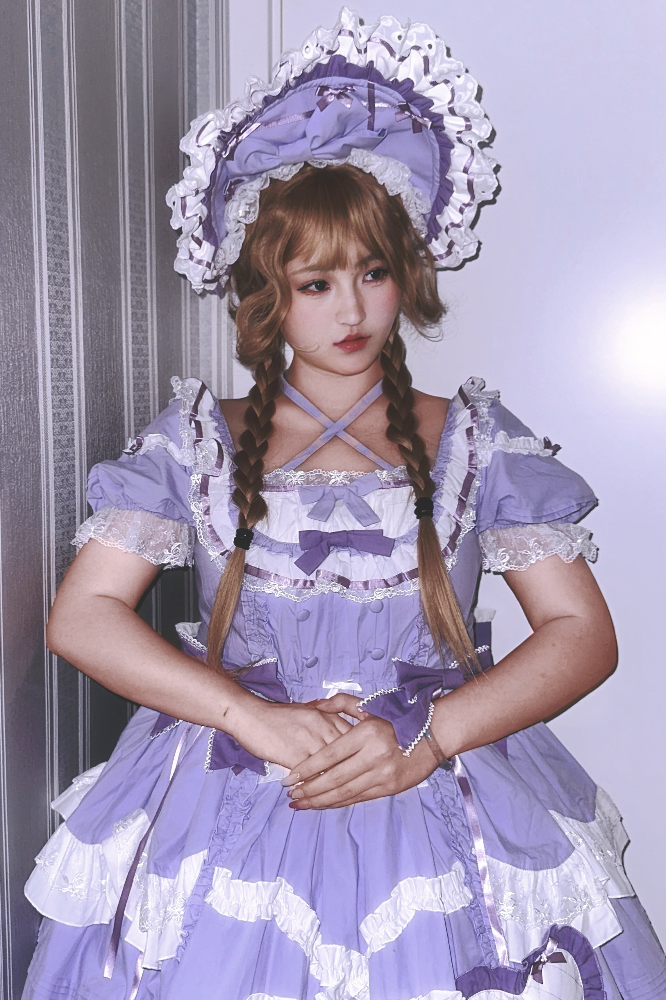
磨叽饭团是一个2024年12月入坑Lolita的大码lo娘
现在已经是个小小的大码Lolita种草姬博主啦（自诩的）
说起成为lo娘的机缘......其实是二十岁生日前夕
精心挑选生日要穿的漂亮裙子时看中了一条名为“倪克斯之吻”的Lolita
从那时起就开始了各种Lolita搭配的故事......
这是饭团的小红书账号，主要推送一些自己喜爱的Lolita测评以及搭配的视频，还请多多关照~
【点击跳转】磨叽饭团的小红书主页
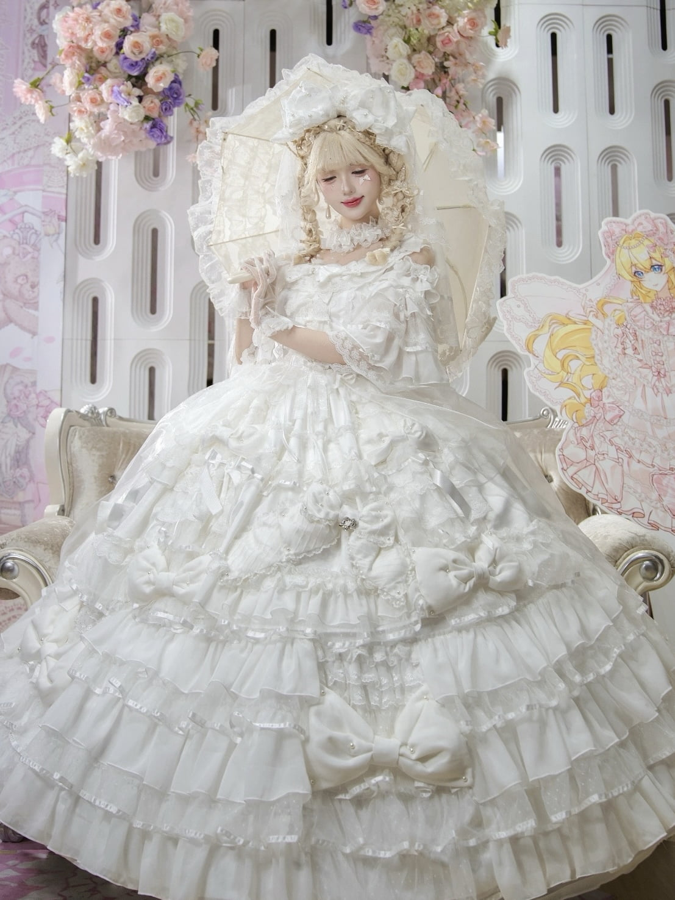
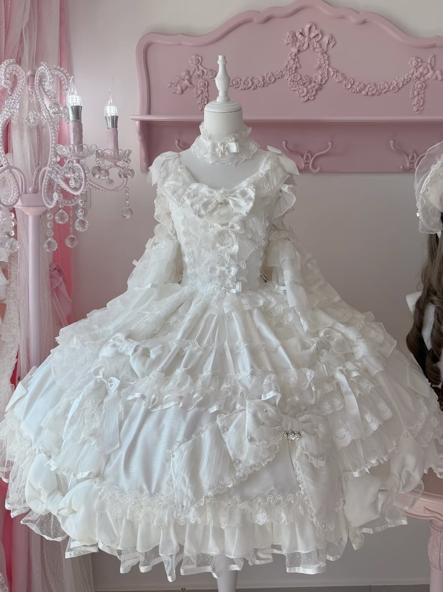
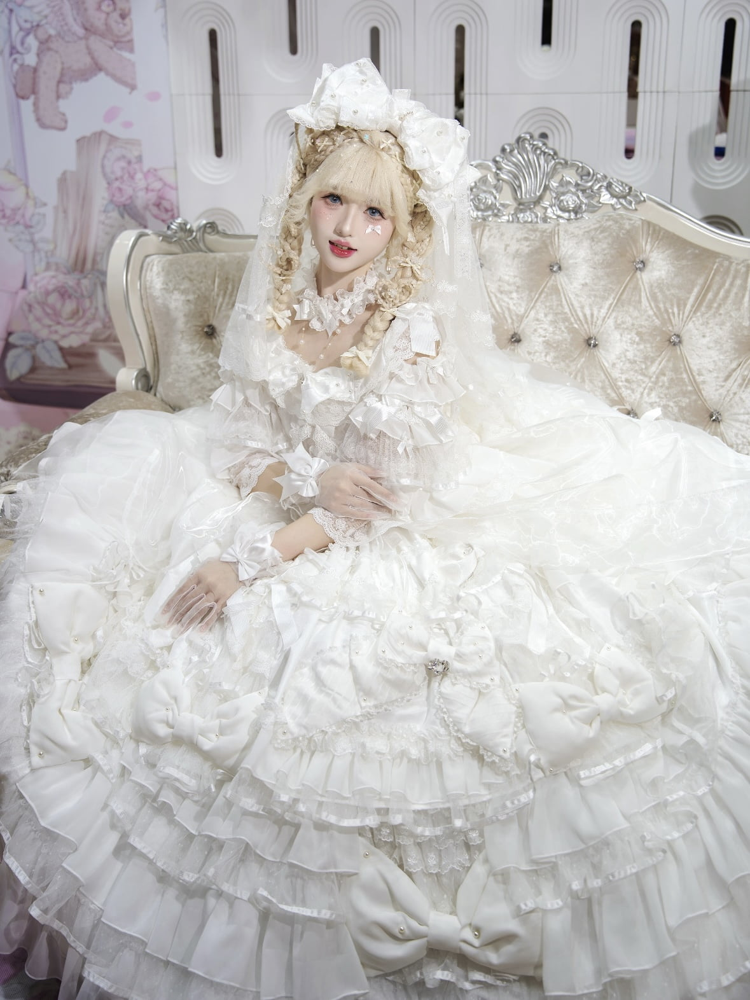
在上海cpsp漫展现场也看到过的梦孚子六周年新品花嫁！
对比蓝色款与粉色款，白色款更典雅
在短jsk本体的基础上增加延长衬裙就能成为华丽大花嫁~
裙摆蝴蝶结以及花边等经典的元素设计并不重复枯燥，但也不凌乱
供搭配的项链与头纱精致度在线且元素与裙摆达成疏密呼应
作为大花嫁，大全套￥1030价格对标质量合理
「【六周年花嫁·宝石公主】古早doll感Lolita花嫁」淘宝商品链接
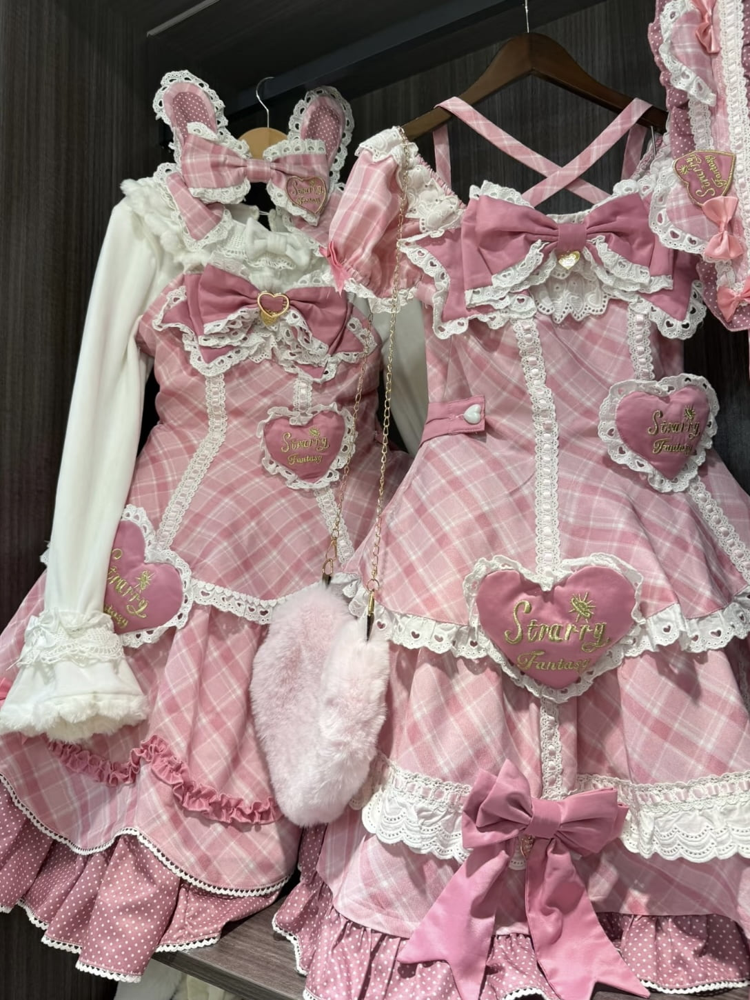
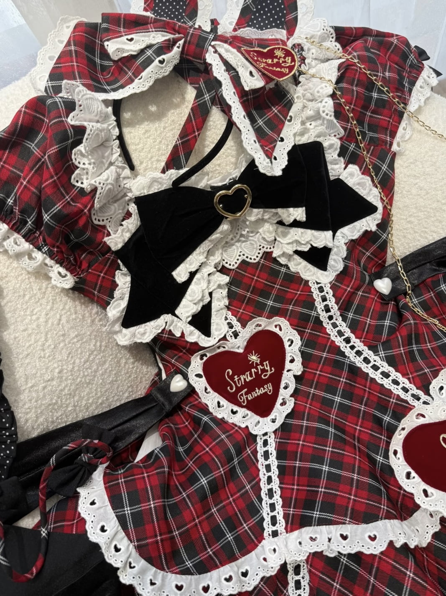
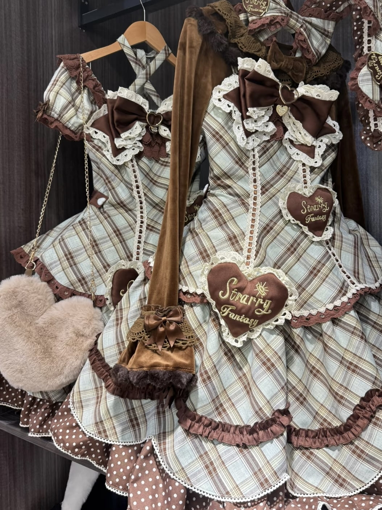
涩谷甜心一团只有红黑格与黑白格
二团开启在即，呼声高的粉色与薄巧色诞生啦！
仍然是TR西装面料的六片裁（已脑补出粉色款搭配金色卷卷假发的甜美doll感...）
搭配同一家店推出的秋冬保暖内搭也是非常合适的
星辰幻想家的裙子价格向来实惠,并且头饰的选择也多
让我们期待二团的到来~